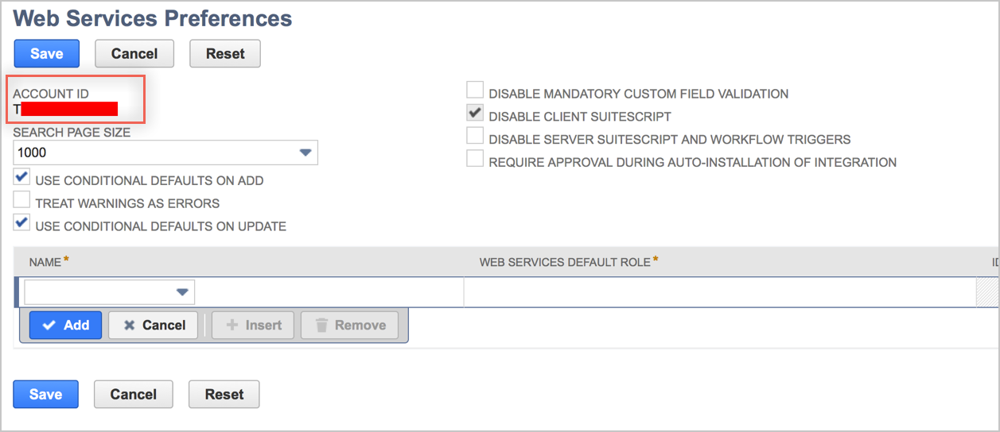
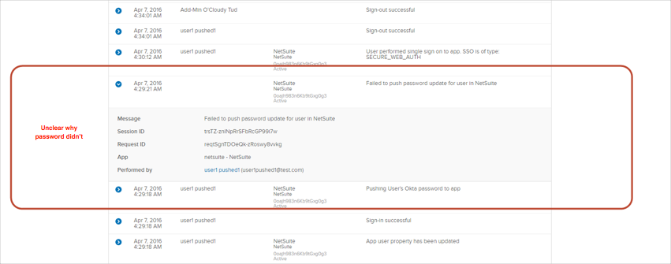

This guide provides the steps required to configure Provisioning for NetSuite and includes the following topics:
The following provisioning features are supported:
New users created in the third party application will be downloaded and turned in to new AppUser objects, for matching against existing OKTA users.
New users created through OKTA will also be created in the third party application.
Updates made to the user's password through OKTA will be pushed to the third party application.
Updates made to the user's profile through OKTA will be pushed to the third party application.
Deactivating the user or disabling the user's access to the application through OKTA will deactivate the user in the third party application.
Reactivating the user through Okta will reactivate the user in the 3rd party application.
Note: If you already have setup the NetSuite application with Admin Username and Admin Password authentication, your existing settings will still work, however if you need to change any provisioning settings you have to switch to Token Based authentication.
Complete the following before you configure provisioning for NetSuite:
Enable the Web Services feature (the NetSuite web services feature needs to be enabled prior to submitting web services requests):
Log in to NetSuite as an administrator.
Navigate to Setup > Company > Enable Features.
Select the SuiteCloud subtab.
Check the Web Services box.
Click Save.
Obtain your AccountID:
Still logged into NetSuite as an administrator.
Navigate to Setup > Integration > Web Services Preferences.
Copy and save your Account ID as shown below:

Set up Token-Based Authentication (TBA):
Note: You require a NetSuite account to access the links referenced in this step.
Follow the steps in this Getting Started with Token-based Authentication guide, and save your consumer key and consumer secret.
Enabling the Token-based Authentication Feature
Setting Up Token-based Authentication Roles
Assigning Users to Token-based Authentication Roles
Create a TBA Token by following the instructions in Access Token Management – Create and Assign a TBA Token instructions in the Managing TBA Tokens guide and save your Token Id and Token secret.
Configure your Provisioning settings for NetSuite as follows:
Check the Enable provisioning features box.
Enter your NetSuite API Credentials
Admin Account ID.
Consumer Key.
Consumer Secret.
Token ID.
Token Secret.

Scroll down and select the Provisioning Features you want to enable.
Click Save.
You can now assign people to the app (if needed) and finish the application setup.
Problem with password push from OKTA to NetSuite:

OKTA and NetSuite by default use similar password policies, but NetSuite uses additional checks and can block too simple to guess password. Ensure users use strong enough passwords.